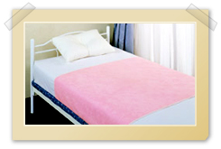
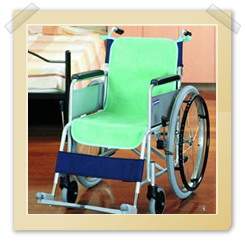

http://www.caremed.co.jp/
キトサン練りこみの抗菌防臭加工でお肌にやさしく、吸水・速乾性に優れた防水シーツ
新多機能パイルシーツ（防水シーツ)
【価格】3,800円（税別）
【寸法】 100cm×160cm
【材質】 表：(1)パイル アクリル100％ (2)基布 ポリエステル100％ 裏：ポリウレタン100％
- 表面はパイル地で肌触りが良く汗や尿を吸収し、寝具を汚しません。また、洗濯後の速乾性に優れています。
- 天然抗菌剤「キトサン」練り込みにより、不快な臭いを防ぐだけでなく、肌への刺激を抑えています。
- 裏面は透湿性のあるポリウレタンフィルムを使用し、モレず、ムレにくく、ズレにくい防水シーツです。
車椅子での不意の失禁による汚れを防ぎ、 裏面はすべり止め加工で安心です。
車椅子シートカバー（防水タイプ)
【価格】3,800円 （同色２枚入り・税別）
【寸法】 40cm×90cm
【材質】 表：(1)パイル アクリル100％ (2)基布 ポリエステル100％ 裏：ポリウレタン100％
【カラー】 グリーン、ピンク
- 表面はパイル地で肌触りが良く汗や尿を吸収し、寝具を汚しません。また、洗濯後の速乾性に優れています。
- 天然抗菌剤「キトサン」練り込みにより、不快な臭いを防ぐだけでなく、肌への刺激を抑えています。
- 裏面は透湿性のあるポリウレタンフィルムを使用し、モレず、ムレにくく、ズレにくい防水シーツです。
|